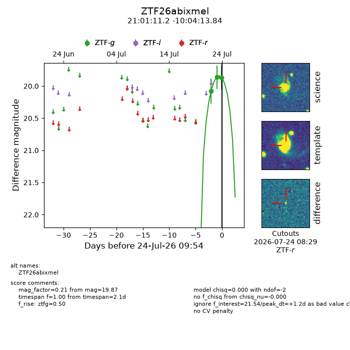
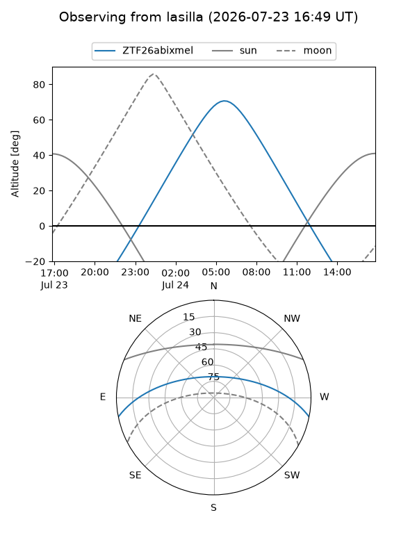
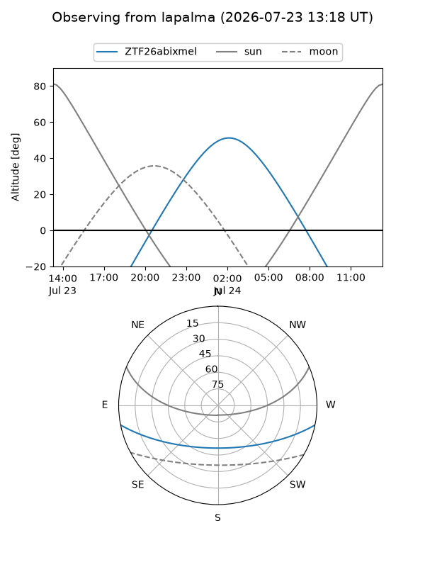
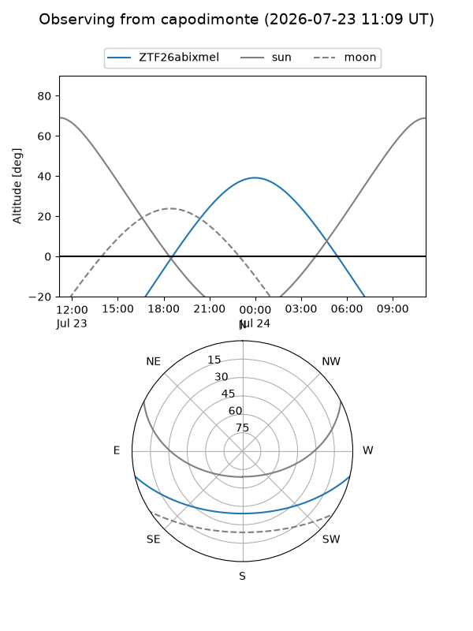
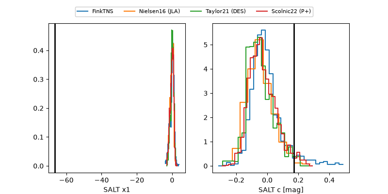

ZTF26abixmel
Target ZTF26abixmel at 2026-07-24 09:56
Aliases and brokers:
FINK-ZTF: ztf.fink-portal.org/ZTF26abixmel
Lasair-ZTF: lasair-ztf.lsst.ac.uk/objects/ZTF26abixmel
ALeRCE-ZTF: alerce.online/object/ZTF26abixmel
Direct TNS query: direct search
alt names
ZTF26abixmel (ztf,fink_ztf)
Coordinates:
equatorial (ra, dec) = 315.2965,-10.07051
equatorial (HMS+DMS) = 21:01:11.15,-10:04:13.84
galactic (l, b) = (38.7850,-33.34939)
Flags:
peak dt: +1.2
Photometry:
last ztfg=19.87
3 ztfg detections
Lightcurve

Visibility



Additional plots
